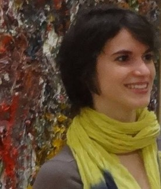

Sophie JACQUIN
Home
CV
Research
Publications
Teaching
Activities

Home
Ph.D. student in computer science
Université Lille 1, Cristal
INRIA Lille-Nord Europe
E-mail:
sophie.jacquin@inria.fr
Phone:
+33 (0)6 13 98 08 27
Adress:
Parc scientifique de la Haute Borne
40, avenue Halley - Bât B - Park Plaza
59650 Villeneuve d'Ascq - France